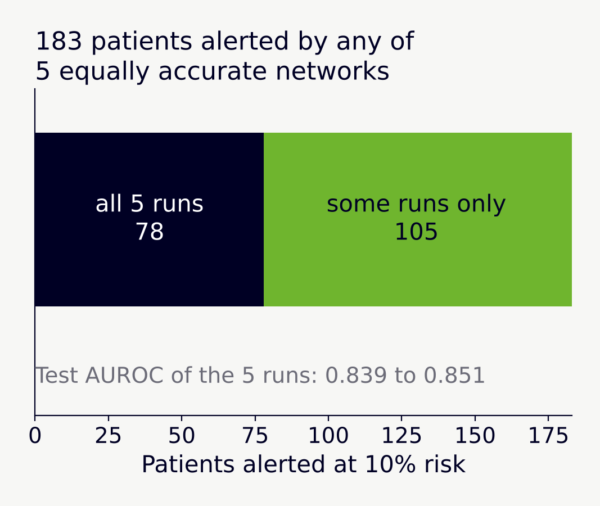
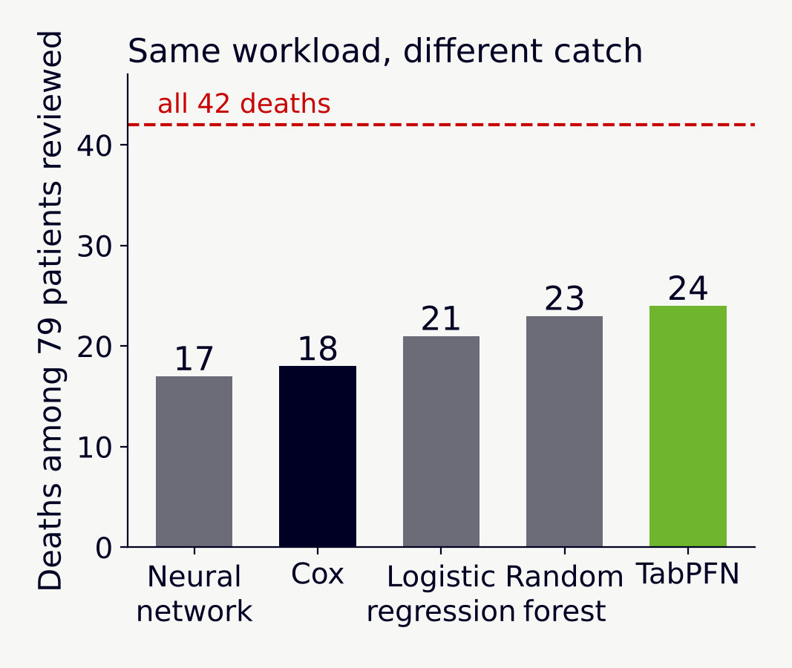
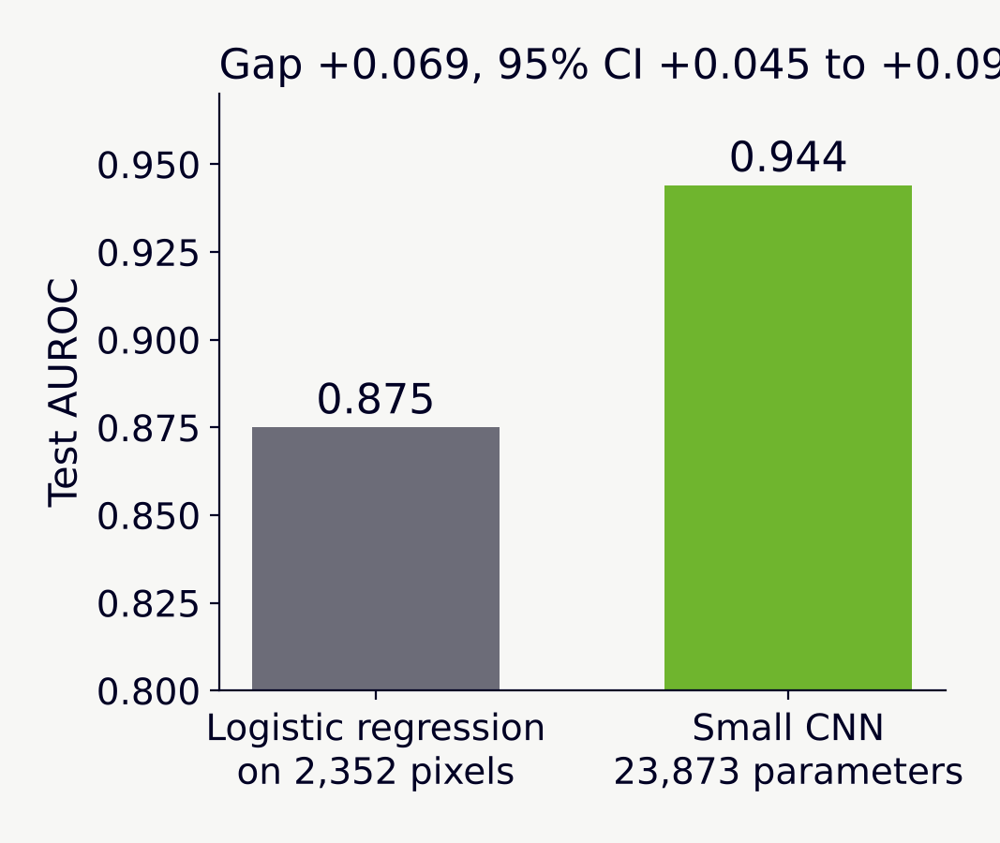
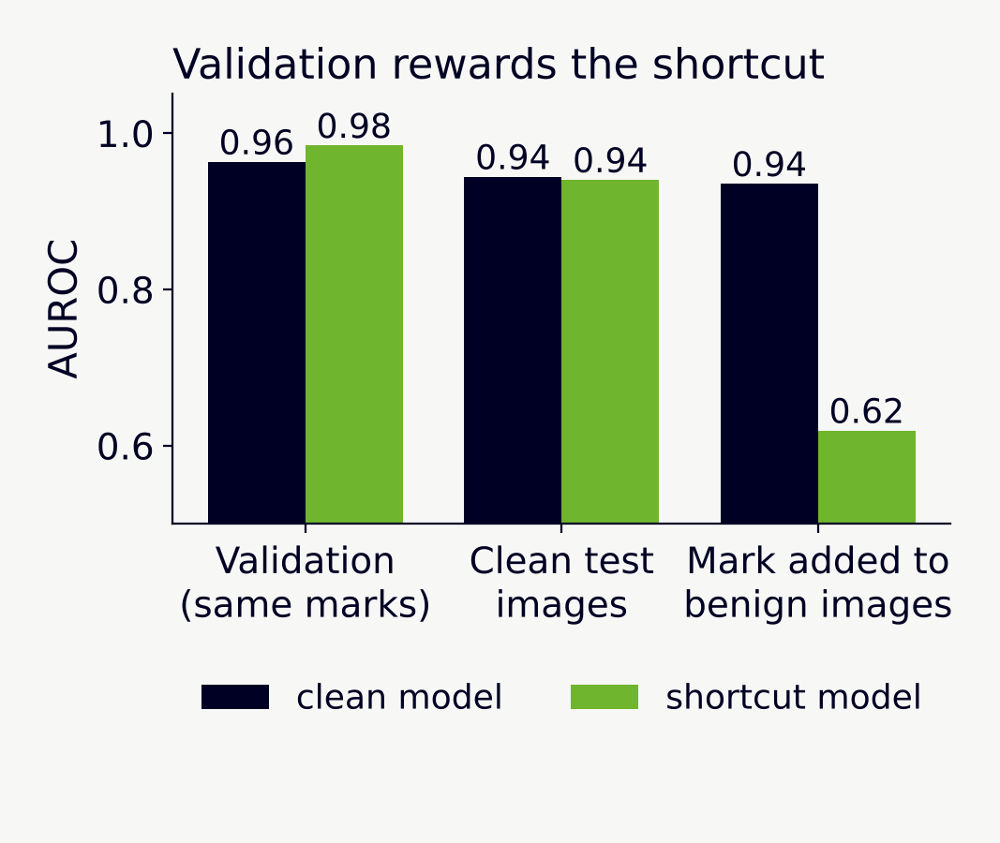
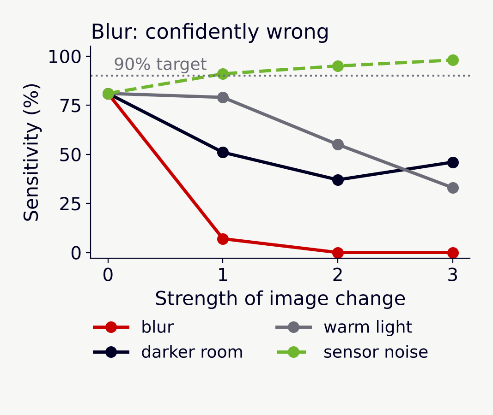

Session 1: From one neuron to a black box
See what changes for patients when a readable model becomes a neural network

Session 1 agenda
Agree a shared vocabulary for transparency
Show that one neuron is logistic regression
Add hidden layers and watch the rule bend
Same score, different patients flagged
Depth stacks familiar parts
-
01
Readable
One neuron
Weighted sum and sigmoid, the same 117 numbers as logistic regression
-
02
Drawable
Eight hidden neurons
Each draws a line; together they bend the risk boundary
-
03
Black box
Two hidden layers
4,289 numbers, meaning spread across every neuron
Each step is simple; the stack is what no one can follow

Readable model or black box
Logistic regression
Readable- 1
Account of one prediction
Exact: weight times value, summed
- 2
Numbers to learn
117 for 116 inputs
- 3
Test AUROC, 7-day death
0.864
- 4
Stability across runs
One solution for these settings
- 5
Question to ask
Is each weight plausible?
Neural network
Black box- 1
Account of one prediction
Approximate only: occlusion parts do not add up
- 2
Numbers to learn
4,289, about 37 times more
- 3
Test AUROC, 7-day death
0.842
- 4
Stability across runs
Seed changes who is flagged
- 5
Question to ask
Is the gain worth the opacity?
Sources: notebook 01, sections 3 to 6; AUROC, area under the receiver operating characteristic curve
Key takeaway
Full access to every weight is not the same as understanding one prediction
Session 2: Does the network earn its place?
Compare four models on the same patients and decide if complexity pays off
Session 2 agenda
Set the rules of a fair comparison
Rank, add uncertainty, check calibration
Spot the weighted-loss trap
Compare at equal threshold and equal capacity
Test a tabular foundation model
Reach a verdict
Five models, same 788 patients
| Model | AUROC | Gap vs Cox (95% CI) | Deaths in top 79 |
|---|---|---|---|
| Cox, competing risks | 0.864 | Reference | 18 of 42 |
| Logistic regression | 0.880 | +0.016 (-0.012 to +0.047) | 21 of 42 |
| Random forest | 0.863 | -0.001 (-0.049 to +0.051) | 23 of 42 |
| Neural network, 5 seeds | 0.852 | -0.011 (-0.048 to +0.026) | 17 of 42 |
| TabPFN-2, pretrained | 0.892 | +0.029 (-0.014 to +0.074) | 24 of 42 |
TabPFN ranks best, yet no interval excludes zero
Sources: notebook 02, sections 3, 5 and 6; AUROC, area under the receiver operating characteristic curve; CI, confidence interval

Two ways to learn from 2,364 patients
Classic model
Starts from zero- 1
Before it meets our data
Knows nothing
- 2
What it does with our patients
Adjusts its weights to fit them
- 3
Time to a first model
Minutes to hours of training and tuning
- 4
Data cleaning needed
Fill gaps, scale, encode
- 5
Everyday analogy
A student revising for one exam
Tabular foundation model
Arrives pre-trained- 1
Before it meets our data
Has practised on about 130 million synthetic tables
- 2
What it does with our patients
Reads them as worked examples, weights stay fixed
- 3
Time to a first model
One pass: seconds on a graphics card
- 4
Data cleaning needed
Handles gaps and scales itself
- 5
Everyday analogy
An experienced locum reading the ward's notes
Sources: Hollmann et al. (2025), Nature, TabPFN; notebook 02, section 6
How TabPFN is trained, once, by its makers
- 1Invent a world
- 2Generate a table
- 3Hide some answers
- 4
 Predict them
Predict them - 5
 Correct and repeat
Correct and repeat
About 130 million synthetic tables teach it how to learn from a table, not facts about patients

How it predicts for our ICU patients
-
01
Context
Show it our 2,364 patients
Inputs and outcomes, gaps left in
-
02
Query
Add the 788 new patients
Inputs only, outcome unknown
-
03
Attention
Look across and down
Each value checked against its row and its column
-
04
Forward pass
One pass, one risk each
No training loop, no tuning
-
05
Stateless
Nothing is stored
Weights unchanged; new context, new predictions
It recognises which kinds of synthetic worlds could have produced our table, then predicts as they would
Sources: Hollmann et al. (2025), Nature; Prior Labs documentation
What changes in the workflow
Classic machine learning
Train, then predict- 1
Prepare the data
Fill gaps, scale, encode categories
- 2
Choose and tune
Pick a model, search settings with cross-validation
- 3
Fit
Learns weights from our patients: the heavy step
- 4
Predict
Fast: applies the learned weights
- 5
New patients arrive
Retrain the model, then re-validate
Tabular foundation model
Predict from context- 1
Prepare the data
Raw table in: gaps and categories handled
- 2
Choose and tune
No tuning: default settings
- 3
Fit
Stores our patients as context: almost instant
- 4
Predict
The heavy step: reads context and new patients together
- 5
New patients arrive
Add them to the context, then re-validate
Sources: notebook 02, sections 2 and 6; Prior Labs documentation

What transfers to our patients
Transfers
General skill- 1
Signal and noise
Spot useful columns, ignore useless ones
- 2
Shapes of relationships
Curves, thresholds and interactions
- 3
Messy data
Missing values, mixed units, categories
- 4
Small samples
Stay cautious when examples are few
- 5
Fit with the data
Works when our table looks like its practice
Does not transfer
Our job- 1
Signal and noise
Knowing what lactate or GCS means
- 2
Shapes of relationships
Whether a relationship is causal
- 3
Messy data
Why values are missing in our hospital
- 4
Small samples
Calibration to our death rate
- 5
Fit with the data
Larger data, other hospitals or time series
Sources: Hollmann et al. (2025), Nature; Grinsztajn et al. (2022)
Where it fits in healthcare
| Fit | Good uses | Why |
|---|---|---|
| Strong | Small clinical datasets: single-hospital cohorts, registries, trials | Built for up to 10,000 rows; often wins where data are scarce |
| Strong | Fast, honest baseline before building anything bespoke | One line of code, no tuning, raises the bar for every other model |
| Careful | Decision support in care | Needs local validation, licence check and monitoring like any device |
| Careful | Data from several hospitals or over time | Assumes one stable table; drift is not part of its practice |
| Poor | Images, free text, signals, very large datasets | Wrong data type or beyond its size limits |
A strong first model for small tables, not a shortcut past validation
Sources: Hollmann et al. (2025), Nature; Ye et al. (2025), A closer look at TabPFN v2; Liu et al. (2026), JAMIA Open
Limits a healthcare team must know
Responsible AI checks before any clinical use
Opaque practice: nobody can inspect the synthetic worlds behind its habits
Model is weights plus context: version both, or predictions cannot be reproduced
Size limits: TabPFN-2 tested up to 10,000 rows and 500 columns
Speed: seconds on a graphics card, much slower on a laptop processor
Licences: TabPFN-2 open with attribution; newer versions non-commercial
Data protection: the hosted service sends rows to the maker's servers
Which TabPFN for class and clinic
TabPFN-2
Used in class- 1
Licence of the weights
Apache 2.0 plus attribution
- 2
Download
No account needed
- 3
Use in hospital care
Allowed, with attribution
- 4
Laptop processor limit
1,000 rows by default; lifted for our 2,364
- 5
Benchmark strength
Lower
TabPFN-3.5
Current default- 1
Licence of the weights
Non-commercial only
- 2
Download
Account and accepted terms
- 3
Use in hospital care
Needs an enterprise licence
- 4
Laptop processor limit
5,000 rows
- 5
Benchmark strength
Higher, as reported by its makers
Sources: TabPFN README and Prior Labs documentation; Hollmann et al. (2025), Nature; notebook 02, section 6
Six tests for the black box
Evidence from notebook 02 on 7-day in-hospital death
Ranking: no model separated from Cox
Calibration: forest and network closer for the sickest group
Equal capacity: forest finds 23 deaths, network 17
Weighted loss: 97 alerts per 100 patients at 10% risk
TabPFN: best AUROC, 0.892, but its interval includes zero
Interpretability: Cox and logistic regression stay readable
Key takeaway
When a readable model performs as well, the black box carries the burden of proof
Session 3: Images and the test-set trap
See where deep learning wins, and check that the test is honest
Session 3 agenda
Audit who is in the data
Fit a readable baseline on pixels
See how convolution works
Check whether the test is independent
Audit data augmentation
How a convolutional network sees
- 1
 Pixels
Pixels - 2
 Edges
Edges - 3Textures
- 4
 Shapes
Shapes - 5Risk score
Filters are learned, not designed, which is where the black box starts

Split by image or by lesion
Original split
Images at random- 1
Test images sharing a training lesion
693 of 2,005, or 35%
- 2
Score change, controlled test
None measurable in two runs at 28 pixels
- 3
Lesions with several photos
31% possibly cancerous, 88% biopsied
- 4
Possibly cancerous in test
19.6%
- 5
What the score supports
Not independent: same lesion on both sides
Corrected split
Lesions- 1
Test images sharing a training lesion
None
- 2
Score change, controlled test
Reference
- 3
Lesions with several photos
Kept together on one side
- 4
Possibly cancerous in test
12.1%, mostly common moles
- 5
What the score supports
Clinics with a similar case mix
Sources: notebook 03, section 4; Abhishek et al. (2025), Scientific Data; Tschandl et al. (2018), Scientific Data
Key takeaway
A test score belongs to a model and its test set: change the patients and the number moves
Session 4: Explanations and shortcuts
Test whether heatmaps describe the model, and catch a planted shortcut
Session 4 agenda
Draw three explanation maps
Measure whether they agree
Run a sanity check
Run a deletion test
Plant a shortcut and audit it
Three maps, three stories
| Method | What it measures | Agrees with occlusion | Deletion score |
|---|---|---|---|
| Saliency | Sensitivity of the output to each pixel | -0.19 | 0.641 |
| Grad-CAM | Last-layer regions that raise the score | 0.19 | 0.414 |
| Occlusion | Score drop when a patch is covered | 1.00 | 0.396 |
| Random pixels | Baseline for the deletion test | - | 0.648 |
Saliency passed the sanity check yet failed the deletion test
Sources: notebook 04, sections 2 to 4; deletion score: mean model score while covering pixels, lower is more faithful

What explanation maps can and cannot do
Can support
Audit- 1
Shortcuts
Reveal a planted ink mark
- 2
Faithfulness
Rank pixels the model needs
- 3
Agreement
Compare methods side by side
- 4
Correctness
Prompt a clinician's questions
- 5
Causes
Point to image regions
Cannot establish
Proof- 1
Shortcuts
Find clues nobody thought to test
- 2
Faithfulness
Show the model's reasoning
- 3
Agreement
Pick the true method by eye
- 4
Correctness
Prove a prediction is right
- 5
Causes
Explain the disease
Sources: notebook 04; Adebayo et al. (2018), Sanity checks for saliency maps
Key takeaway
Use explanation maps to audit a model, never to prove it is right
Session 5: Trust, referral and the decision
Turn a model score into a safe, accountable clinical decision
Session 5 agenda
Check calibration on new data
Set a referral threshold with an interval
Hand over uncertain lesions
Stress test image quality
Ask who it misses
Hold the review panel
From score to safe use
-
01
Risk
Calibrate on target data
Platt scaling on 63 positive images moved the error
-
02
Promise
Set the threshold with an interval
90% on validation became 81% on test
-
03
Oversight
Hand over borderline cases
Handing over 20% cut misses from 28 to 8 or 12
-
04
Robustness
Gate image quality
Mild blur dropped sensitivity to 7%
-
05
Fairness
Report subgroups honestly
4 to 96 positive lesions per group; no skin tone
Each step answers a question a regulator will ask
Sources: notebook 05; Regulation (EU) 2024/1689; Regulation (EU) 2017/745

The review panel
Groups of four: one role each, one decision together
Dermatologist: missed positive lesions and unnecessary referrals
Patient representative: fairness and the right to challenge
Health service manager: workload, cost and waiting lists
Regulator: evidence, documentation and monitoring
Decide: deploy, restrict, study or stop
Name two numbers and one missing piece of evidence
Key takeaway
Decide who acts on the output and who answers for it before the model meets patients